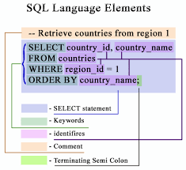
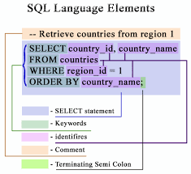

SQL en databases
SQL, ookwel Structured Query Language, is een standaardtaal voor een databasemanagementsysteem(DBMS). Deze taal kan gebruikt worden voor het bevragen en aanpassen van de gegevens binnenin de Database. SQL werd door de jaren heen gerenoveerd. zo had je verschillende soorten SQL, als bijvoorbeeld: SQL-92, SQL-2003 enzv. Bijna elke DBMS heeft er eigen functies aan toegevoegd. Zo kon het uiteindelijk zonder problemen van de ene database naar de andere worden geëmigreerd. Naast SQL heb je ook NOSQL, deze bestaat al sinds begin jaren 60 en slaat gegevens op die anders zijn gemodelleerd dan SQL. De naam NOSQL, verscheen echter pas in de 21e eeuw. Ook heb je zoiets als sharding. Bij sharding wordt de database gesplitst in kleinere onderdelen. Deze onderdelen zijn nu sneller en gemakkelijker te beheren.
De werking
SQL maakt gebruik van query's, die query's zijn reeks getallen die een opdracht vormen voor de DBMS. Met SQL is het mogelijk om tabellen aan te maken, te wijzigen, te vullen en te verwijderen. Met SQL is het mogelijk tabellen te combineren. Je voegt dat de code joinen toe en dan joinen ze als het waren elkaar. Bij databases kunnen er fouten zijn zoals redundantie en inconsistentie. Bij redundantie is er spraken van het dubbelopslaan van een item, bij inconsistentie is er sprake van nietsamenhangende gegevens.
De voorwaarden van SQL
De voorwaarden zijn de eisen waar SQL aan moet voldoen. Dit zijn ACID(zie Data) en CRUD. CRUD is een afkorting die bestaat uit 4 verschillende basisoperaties. Create, Read, Update en Delete. Dit zijn de vier mogelijke dingen die je met gegvens kan doen. Create: Toevoegen van nieuwe gegevens, Read: Opvragen van gegevens, Update: Wijzigen van gegevens. Delete: Verwijderen van gegevens.
Tabellen combineren
Een JOIN kan je gebruiken voor het combineren van gegevens uit twee of meer tabellen. Er zijn meerdere varianten van de JOIN. INNER JOIN: wanneer je gebruik gaat maken van de INNER JOIN zullen de records uit beide tabellen worden gehaald welke aan elkaar zijn verbonden. LEFT [OUTER] JOIN: met deze clausule kun je alle records ophalen uit de tabel die aan de linkerkant van de JOIN staat gespecificeerd, dus ook de rijen uit de linkse tabel die niet aan de join voorwaarde voldoen worden ook in het resultaat weergegeven. RIGHT [OUTER] JOIN: met deze clausule kun je alle records ophalen uit de tabel die aan de rechterkant van de JOIN staat gespecificeerd, dus ook de rijen uit de rechtse tabel die niet aan de join voorwaarde voldoen worden ook in het resultaat weergegeven. FULL [OUTER] JOIN: met deze clausule kun je alle records ophalen uit de tabel die zowel aan de linkerkant en aan de rechterkant van de JOIN staan gespecificeerd, dus ook de rijen uit de linkse en rechtse tabel die niet aan de join voorwaarde voldoen worden ook in het resultaat weergegeven.
Functies
Omdat je bij SQL met nummers werkt, is er de optie om wiskundige functies te gebruiken. Met deze functies kan je dingen zoals optellen of het gemiddelde berekenen. Dit doe je door gebruik te maken van de volgende termen. AVG, COUNT, MAX, MIN en SUM.
Ook heb je de mogelijkheid om te groeperen. Groeperen is een speciaal soort berekening en wordt groepsfunctie genoemd.
De naam subquery's zegt het misschien al, maar dat betekent, het plaatsen van een query binnen een andere query. Als je dit niet zou doen zou je twee aparte query's moeten maken, hier verdoe je alleen maar tijd mee.
 
